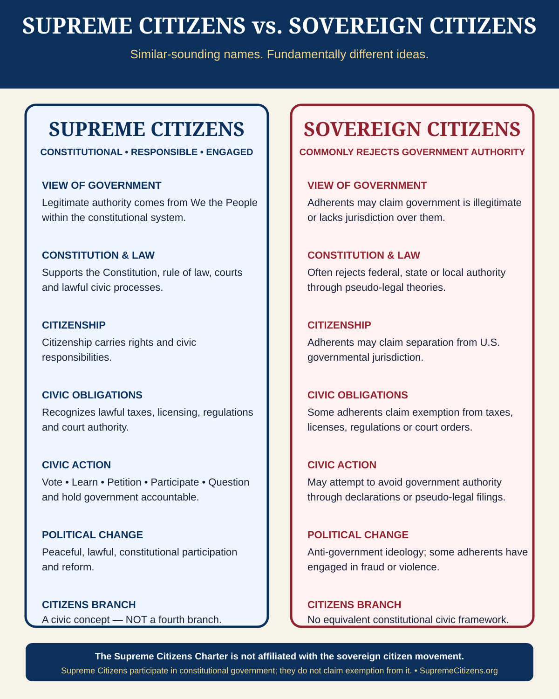

⚖
Equal
No citizen is constitutionally superior to another. Equal civic dignity is the starting point.
A shared civic identity
A Supreme Citizen is not a person who stands above other citizens or outside the law. It is an individual expression of membership in the sovereign civic body—We the People—and of the responsibilities that self-government requires.
No citizen is constitutionally superior to another. Equal civic dignity is the starting point.
Civic authority is exercised through constitutional institutions, lawful processes, rights, and limits.
Rights are joined to duties of participation, judgment, accountability, peaceful disagreement, and stewardship.
Collective popular sovereignty
The phrase describes the people collectively as the ultimate source of legitimate political authority. Government receives delegated constitutional authority; it does not create the people’s sovereignty as a political favor.
The plural form matters because sovereignty is collective. The identity is intentionally inclusive: citizens can disagree sharply about policy, ideology, candidates, and parties while remaining equal participants in the same constitutional order.
Individual civic identity
The singular form turns the collective constitutional principle into a personal civic ethic. A Supreme Citizen is informed without being unquestioning, patriotic without surrendering independent judgment, skeptical of concentrated power while respecting lawful institutions, and protective of liberty for both self and others.
It is a statement of membership and responsibility—not rank, privilege, legal immunity, or exemption.
Works within constitutional government.
Accepts the rule of law.
Uses elections, courts, petitions, peaceful protest, legislation, and public participation.
Claims civic responsibility.
Defends constitutional rights within the legal system.
Does not claim personal exemption from government.
Does not claim courts or ordinary laws cease to apply by personal declaration.
Does not reject lawful civic obligations.
Does not assert special personal immunity or superior legal status.
An Important Distinction
The names may sound similar, but the ideas are fundamentally different. The Supreme Citizens Charter is grounded in constitutional citizenship, equal civic dignity, the rule of law, and peaceful participation within the American constitutional system.

Supreme Citizens recognizes that “We the People” are the source of legitimate political authority within the constitutional system—not outside it. Citizens and public officials alike remain subject to the Constitution and the rule of law.
The Citizens Branch is a civic concept for informed participation and accountability. It is not a fourth branch of government and does not claim immunity from laws, taxes, courts, licensing requirements, regulations, or other lawful civic obligations.
The Supreme Citizens Charter is not affiliated with the sovereign citizen movement.